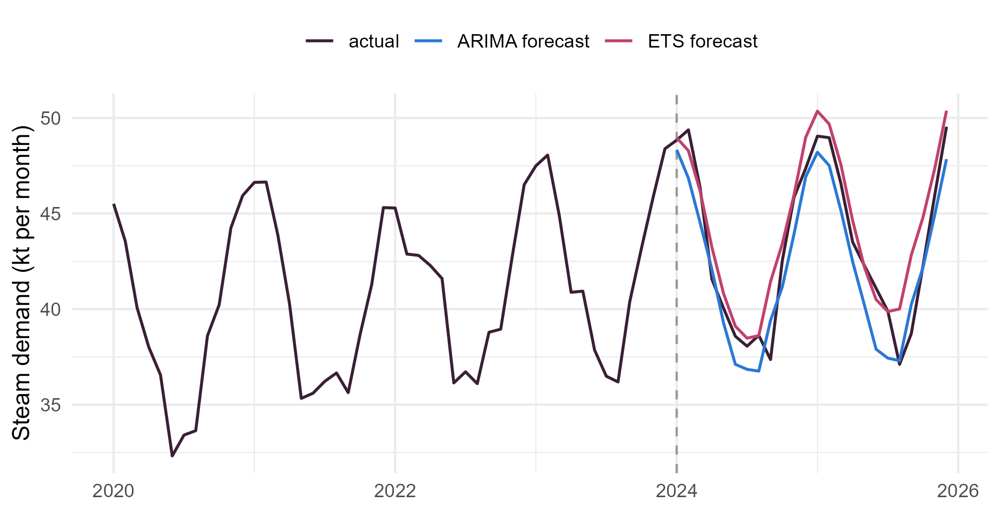

Module 6 · Lesson 8 of 13 Week 97 of 160 About 5–7 hours
Forecasting
How good is a forecast, really?
Forecast the steam demand for 2024 and 2025 from the years before, and judge every forecast on data it hasn’t seen. Start with the four benchmark methods every forecast must beat, then compare ETS and seasonal ARIMA on a test set with RMSE, MAE and MASE, check whether their prediction intervals keep their promise, and use time-series cross-validation to compare methods over many forecast origins. Finish with a combined forecast that beats both.
Every model in this module can produce a forecast. The question this lesson asks is the one a plant manager should always ask back: how accurate is it likely to be? A model’s fit to the data it was estimated on is no answer. With enough parameters, any model fits the past well, and that tells you nothing about the future.
The honest test is to forecast data the model hasn’t seen. Split the series into a training set, to fit the models, and a test set, to judge them. Here, the steam demand from 2014 to 2023 is the training set, and the 24 months of 2024 and 2025 are the test set, as if it were January 2024 and you had to plan the boilers for two years.
A forecast is a promise about the future. This lesson is about keeping score, fairly, before anyone bets the plant on it!
In this lesson you’ll:
- split a series into training and test sets
- forecast with the four benchmark methods every model must beat
- measure accuracy with RMSE, MAE and the scale-free MASE
- compare ETS and seasonal ARIMA on the test set
- check whether prediction intervals cover what they claim
- compare methods by time-series cross-validation, and combine forecasts
Training and test sets
Your turn. Split the series with window(): training to December 2023, testing from January 2024. Check the lengths.
The test set starts in January 2024.
train <- window(y, end = c(2023, 12))
test <- window(y, start = c(2024, 1))
c(train = length(train), test = length(test))120 months to train on and 24 to test. The test set should be at least as long as the horizon you care about, here two years. Never tune a model by looking at the test set: once you’ve used it to choose, it’s no longer a fair test.
Benchmarks
Before building anything clever, try the four simple methods that every forecast should beat:
- Mean: the average of all the training data,
meanf(). - Naive: the last observation,
naive(). The random walk’s forecast. - Seasonal naive: the value from the same month a year earlier,
snaive(). - Drift: the last observation, plus the average change per period,
rwf(drift = TRUE).
Accuracy is measured from the test-set errors, e = y - \hat y. The root mean squared error (RMSE), \sqrt{\text{mean}(e^2)}, punishes big errors most. The mean absolute error (MAE), \text{mean}(|e|), is easier to explain: the typical error. accuracy(forecast, test) computes them, and more.
Your turn. Forecast the test period with all four, and compare their test-set RMSE.
The drift method is rwf() with drift = TRUE.
fcs <- list(mean = meanf(train, h = 24), naive = naive(train, h = 24),
snaive = snaive(train, h = 24), drift = rwf(train, drift = TRUE, h = 24))
sapply(fcs, function(f) accuracy(f, test)["Test set", "RMSE"])The seasonal naive method wins by far: an RMSE of 1.70 kt, against 6.0 to 7.0 for the other three, which ignore the season. “This month will be like the same month last year” is a strong benchmark for any seasonal series. A model that can’t beat it isn’t worth its complexity.
Your turn. Check what the seasonal naive method does: compare its forecast for January 2024 with the training data’s January 2023.
January is period 1.
fc <- snaive(train, h = 24)
c(forecast_jan_2024 = fc$mean[1], actual_jan_2023 = window(train, start = c(2023, 1), end = c(2023, 1)))Both are 47.5 kt: the forecast simply copies last January. For 2025, the seasonal naive method copies 2023 again, since it can’t see 2024. It ignores the trend, which is why a model with a trend should beat it at longer horizons.
ETS against ARIMA
Your turn. Fit ets() to the training data, forecast the test period, and find the test-set RMSE, MAPE (mean absolute percentage error) and MASE (explained below).
Compare the forecast with test.
fit <- ets(train)
fc <- forecast(fit, h = 24)
c(fit$method, round(accuracy(fc, test)["Test set", c("RMSE", "MAPE", "MASE")], 3))ets() chose ETS(M,A,A) on the training data: multiplicative errors, with an additive trend and season. Its test-set RMSE is 1.64 kt, a little better than the seasonal naive’s 1.70, and its MAPE says it’s off by 2.8% in a typical month. That’s a smaller margin than you might expect from a model with a trend. The weather in 2024 and 2025 is what no model of steam alone can foresee.
On the training data, auto.arima() chooses ARIMA(1,0,0)(1,1,1)[12] with drift, a seasonal model (Lesson 9 explains the notation). The search takes a while in the browser, so here’s the model, specified directly.
Your turn. Fit it, forecast the test period, and compare its RMSE and MASE with ETS’s.
The third measure is "MASE".
fit <- Arima(train, order = c(1, 0, 0), seasonal = c(1, 1, 1), include.drift = TRUE)
fc <- forecast(fit, h = 24)
accuracy(fc, test)["Test set", c("RMSE", "MAE", "MASE")]An RMSE of 1.59, slightly better than ETS’s 1.64, but a MASE of 0.83, worse than ETS’s 0.69. The two measures disagree because ARIMA made fewer large errors but more middling ones. With 24 test months, neither difference means much: that’s the limitation of a single test set, which the cross-validation below addresses.
Here are both forecasts, against what happened:
fe <- forecast(ets(train), h = 24)
fa <- forecast(Arima(train, order = c(1, 0, 0), seasonal = c(1, 1, 1), include.drift = TRUE), h = 24)
df <- rbind(data.frame(t = as.numeric(time(window(y, start = 2020))), v = as.numeric(window(y, start = 2020)), what = "actual"),
data.frame(t = as.numeric(time(fe$mean)), v = as.numeric(fe$mean), what = "ETS forecast"),
data.frame(t = as.numeric(time(fa$mean)), v = as.numeric(fa$mean), what = "ARIMA forecast"))
ggplot(df, aes(x = t, y = v, color = what)) +
geom_vline(xintercept = 2024, linetype = "dashed", color = "grey60") +
geom_line(linewidth = 0.7) +
scale_color_manual(values = c(actual = "#3A1F35", `ETS forecast` = "#C2416C", `ARIMA forecast` = "#2a78d6"), name = NULL) +
labs(x = NULL, y = "Steam demand (kt per month)") +
theme_minimal(base_size = 12) +
theme(legend.position = "top")
Do the intervals keep their promise?
A forecast’s prediction intervals are part of the forecast. An 80% interval should contain the actual value about 80% of the time. That’s called coverage.
Your turn. Find the share of the 24 test months that fell inside ETS’s 80% and 95% intervals.
The 95% interval is the second column.
fc <- forecast(ets(train), h = 24)
c(inside_80 = mean(test >= fc$lower[, 1] & test <= fc$upper[, 1]),
inside_95 = mean(test >= fc$lower[, 2] & test <= fc$upper[, 2]))20 of 24 months inside the 80% intervals (83%), and 21 inside the 95% intervals (88%). The 80% intervals did well. The 95% intervals missed three months, about twice as many as they should, but with 24 months, that could easily be chance. Model-based intervals tend to be a bit too narrow in practice, because they ignore the uncertainty about the model itself. Keep track of coverage over time: it’s the honest test of whether a forecaster’s uncertainty can be trusted.
Scale-free accuracy: MASE
RMSE and MAE are in the series’ units, so you can’t compare them across series. MAPE is unit-free, but it explodes near 0, and it treats over- and under-forecasts unequally. The mean absolute scaled error (MASE), from Hyndman and Koehler, divides the MAE by the in-sample MAE of the seasonal naive method on the training data:
\text{MASE} = \frac{\text{MAE of the forecast}}{\text{mean}\big(|y_t - y_{t-m}|\big)\text{ over the training data}}.
Below 1, the forecast beats a typical seasonal naive one-step forecast.
Your turn. Compute ETS’s MASE by hand.
The seasonal naive differences are 12 months apart.
fc <- forecast(ets(train), h = 24)
scale <- mean(abs(diff(train, lag = 12))) # the seasonal naive's in-sample MAE
mae <- mean(abs(test - fc$mean))
c(scale = scale, mae = mae, mase = mae / scale)The seasonal naive method’s typical in-sample error is 1.69 kt, and ETS’s test MAE is 1.17, so its MASE is 0.69, matching accuracy(). ETS’s errors, up to two years ahead, were about 30% smaller than the seasonal naive’s one-year-ahead errors on the past data.
Time-series cross-validation
A single test set gives a single, noisy answer. Time-series cross-validation uses many: for each origin t, fit the model to the data up to t, forecast t + h, and record the error. The training set grows as the origin moves forward, and the model never sees the future. (Ordinary cross-validation, which leaves out random observations, would let the model peek at the future.)
tsCV(y, method, h) does it, and returns the errors.
Your turn. Compare the one-step-ahead cross-validated RMSE of the seasonal naive, naive and drift methods, using the whole series.
One step ahead: h = 1.
e_snaive <- tsCV(y, snaive, h = 1)
e_naive <- tsCV(y, naive, h = 1)
e_drift <- tsCV(y, rwf, drift = TRUE, h = 1)
c(snaive = sqrt(mean(e_snaive^2, na.rm = TRUE)), naive = sqrt(mean(e_naive^2, na.rm = TRUE)),
drift = sqrt(mean(e_drift^2, na.rm = TRUE)), forecasts = sum(!is.na(e_snaive)))The seasonal naive method’s cross-validated RMSE is 1.99 kt, over 131 forecasts, against 2.59 for naive and 2.63 for drift. One step ahead, last month is a better guide than it was two years ahead, but still worse than last year’s same month. Run on ETS(A,A,A), refitted at every origin from 60 months on, cross-validation gives a one-step RMSE of 1.50: a clear improvement, measured over 84 forecasts, not 24. (That takes 84 model fits, which is why it isn’t a browser exercise.)
Challenge round
Challenge 1 · Combine the forecasts. One of the most robust findings in forecasting is that the average of several reasonable forecasts often beats each of them. Average the ETS and seasonal ARIMA forecasts, and find the test-set RMSE.
Average the two point forecasts, fe$mean and fa$mean.
fe <- forecast(ets(train), h = 24)
fa <- forecast(Arima(train, order = c(1, 0, 0), seasonal = c(1, 1, 1), include.drift = TRUE), h = 24)
combo <- (fe$mean + fa$mean) / 2
sqrt(mean((test - combo)^2))1.22 kt, better than either alone (1.64 and 1.59). Their errors weren’t perfectly correlated, so averaging canceled some of them out. Forecast competitions, from Makridakis’s M competitions onward, have found this again and again. When in doubt, combine.
Challenge 2 · Accuracy by horizon. tsCV() with h = 6 returns a matrix with a column for each horizon. Find the seasonal naive method’s cross-validated RMSE at horizons 1 to 6.
Six horizons: h = 6.
e <- tsCV(y, snaive, h = 6)
round(sqrt(colMeans(e^2, na.rm = TRUE)), 4)About 1.99 kt at every horizon from 1 to 6. That’s special to the seasonal naive method: every forecast up to 12 months ahead uses data from a year earlier, so they’re all equally old. For models like ETS and ARIMA, the error grows with the horizon, and comparing methods at the horizon you actually need is essential.
Quick quiz
1. Why judge a forecasting model on a test set rather than on its fit to the training data?
In-sample fit rewards complexity. Out-of-sample accuracy is what matters.
2. For a monthly seasonal series, which benchmark is usually hardest to beat?
Last year’s same month already captures the seasonal pattern.
3. What does a MASE of 0.7 mean?
Below 1 means better than a typical seasonal naive forecast.
4. In time-series cross-validation, why must the training set only contain data before each forecast origin?
Ordinary cross-validation leaves out random points, which breaks the time order.
5. Of 24 test months, 21 fell inside the 95% prediction intervals. What should you conclude?
You’d expect about 23. Three misses instead of one can easily happen.
6. Why do combined forecasts often beat their components?
Not always closer, but more robust on average.
Wrap-up
You can now judge forecasts fairly. Here’s what you’ve learned:
- Training and test sets: fit on 2014 to 2023, judge on 2024 and 2025.
- Benchmarks: seasonal naive is the one to beat, with a test RMSE of 1.70 kt, against 6.0 to 7.0 for the mean, naive and drift methods.
- ETS(M,A,A) and seasonal ARIMA beat it modestly: RMSE 1.64 and 1.59, MASE 0.69 and 0.83. The measures can disagree, and 24 months can’t settle it.
- Coverage: 83% of test months inside ETS’s 80% intervals, and 88% inside its 95% intervals.
- Time-series cross-validation compares methods over many origins: seasonal naive’s one-step RMSE is 1.99 kt over 131 forecasts, and ETS’s 1.50.
- Combining the ETS and ARIMA forecasts gave the best test RMSE, 1.22 kt.
TipPractice in RStudio (optional, about an hour)
Download steam_demand.csv into your project’s data-raw/ folder.
- All the measures. Run
accuracy(fc, test)for the ETS forecast, and read every column: ME, RMSE, MAE, MPE, MAPE, MASE and ACF1. What does ME say about bias? - Cross-validate ETS and ARIMA. Write a function
fets <- function(x, h) forecast(ets(x), h = h), and runtsCV(y, fets, h = 12, initial = 60). Do the same forauto.arima(). (It takes a few minutes.) Plot the RMSE against the horizon for both, with the seasonal naive’s. - A different test period. Repeat the test-set comparison with 2022 to 2023 as the test set. Does the ranking of ETS and ARIMA change?
- Bootstrap intervals. Compare
forecast(ets(train), h = 24)withforecast(ets(train), h = 24, bootstrap = TRUE). Are the intervals much different? What does that suggest about the residuals’ distribution?
NoteKey words from this lesson
- Training set and test set
- The data used to fit a model, and the later data used to judge its forecasts.
- Benchmark methods
- Simple forecasts that every model must beat: mean, naive, seasonal naive and drift.
- RMSE and MAE
- The root mean squared error and the mean absolute error of the forecasts, in the series’ units.
- MAPE
- The mean absolute percentage error. Unit-free, but unstable near 0.
- MASE
- The mean absolute scaled error: the MAE divided by the seasonal naive method’s in-sample MAE.
- Coverage
- The share of actual values that fall inside the prediction intervals.
- Time-series cross-validation
- Repeated forecasting from many origins, each using only the data before it.
- Forecast combination
- Averaging the forecasts of several methods.
NoteWant to read more?
- Rob Hyndman and George Athanasopoulos, Forecasting: Principles and Practice (3rd edition), chapter 5, “The forecaster’s toolbox”: the benchmark methods, the accuracy measures and time-series cross-validation, and section 13.4, “Forecast combinations”.
- Rob Hyndman and Anne Koehler, “Another look at measures of forecast accuracy”, International Journal of Forecasting (2006). Where MASE comes from, and what’s wrong with the alternatives.
- Spyros Makridakis, Evangelos Spiliotis and Vassilios Assimakopoulos, “The M4 Competition: 100,000 time series and 61 forecasting methods”, International Journal of Forecasting (2020). What the largest forecasting competition learned, including about combinations.